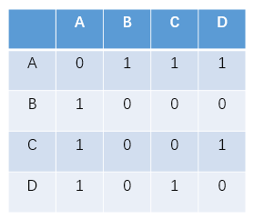

前言
还未详细研究———————
实验介绍
实验内容
本实验介绍基于用户的协同过滤算法的电影推荐系统。
实验目标
通过本实验掌握协同过滤算法。
实验知识点
- 协同过滤算法
实验环境
- python 3.6.5
- CourseGrading在线实验环境
预备知识
- 初等数学知识
- Linux命令基本操作
- Python编程基础
准备工作
下载movie_recommender.tgz 提取码：sric到指定目录下，然后再依次选择点击上方的File->Open->Upload,上传刚才下载的数据集压缩包，再使用如下命令解压：
1 | !tar -zxvf movie_recommender.tgz |
movie_recommender/
movie_recommender/ratings.csv实验步骤
获取数据集
本次实验使用公开数据集MovieLens提供的由600多个用户在近9000部电影上的评分构成的10万多条记录。数据存储在数据集目录的ratings.csv文件中，可直接调用。数据格式如下：
1 | !cat movie_recommender/ratings.csv |
cat: movie_recommender/ratings.csv: No such file or directory其中，userId为用户ID，每个用户对应唯一ID。movieId为电影ID，每个ID对应唯一一部电影。rating为某用户在某部电影上的评分，最高分为5分，最低分为0.5分。无缺失值。timestamp为用户评分时间戳，本次实验不使用该数据。实验中将原始数据划分为训练集和测试集，使用随机数将同一用户的数据随机的划分到测试集和训练集。
代码实现：
1 | def get_dataset(self, filename, pivot=0.75): |
建立用户电影矩阵模型
协同过滤算法的输入数据通常表示为一个m×n的用户评价矩阵Matrix，m是用户数，n是电影数，Matrix[ij]表示第i个用户对第j个电影的评价：
发现兴趣相似的用户
这一阶段，主要完成对目标用户最近邻居的查找，通过计算目标用户与其他用户之间的相似度，得到与目标用户最近的邻居集。度量用户间相似性：设N(u)为用户u喜欢的电影集合，N(v)为用户v喜欢的电影集合，将上一步中每行记录视为一个向量，那么u和v的相似度可通过以下进行计算：
(a)采用Jaccard公式：(b)余弦相似度计算：这里选择余弦公式进行相似度度量计算，假设目前共有4个用户(A、B、C、D)，5部电影(a、b、c、d、e)，用户与电影的关系如下图所示：
而这种方法的时间复杂度是O(|U| * |U|)，所以非常耗时。而且在上表中可以看到“用户-电影”表是一个稀疏矩阵，即很多时候N(U)∩N(V)=0，如果换一下思路，可以首先计算N(U)∩N(V)!=0的用户，然后再计算
为此可以首先建立“电影-用户”的倒排表，对每部电影都保存电影到用户的列表：
设稀疏矩阵C[u][v]=N(u)^N(v)，在倒排索引中假设用户u和用户v同时属于倒排索引中K部电影对应的用户列表，就有C[u][v]=K。例如上图所示只有电影a中同时出来了用户有A和用户B，则在矩阵中赋值为1：

接着对N(U)∩N(V)!=0的用户进行相似度计算。
到此，用户间的相似度计算就得到了，可以很直观的找到与目标用户兴趣相似的用户。
1 | def calc_user_sim(self): |
产生推荐项目
接下来，需要从矩阵中找到与目标用户最相似的K个用户，用集合S(u,K)表示，将S中用户喜欢的电影全部提取出来，并除去u已经喜欢的电影。对每个候选电影i，用户对它的感兴趣的程度用以下公式计算：
（其中Rvi表示用户v对电影i的喜欢程度，此处举例全部为1，在电影评分时应该代入用户的评分）。
继续上面的例子，假设我们给A推荐电影，选取K=3，对用户A，电影c、e没有看过，因此可以将这两部电影推荐给用户A，根据UserCF算法用户A对物品c、e的兴趣分别计算p(A,c)和p(A,e)：
所以用户A对电影c和e的喜欢程度可能一样，在真实的推荐系统中计算时考虑用户的评分，最后根据得分排序取前K个即为推荐电影。
代码实现：
1 | def recommend(self,user): |
推荐系统中准确率和召回率的理解
推荐系统中的TopN推荐，它的预测准确率一般是通过准确率和召回率来进行评估的，那么我们就要理解，什么是准确率，什么是召回率！
准确率，顾名思义，就是准确程度。通过正确数/总数得到。
召回率，我们可以理解为找到的数目与总的需要我们找到的数目的比。精确率是针对我们预测结果而言的，它表示的是预测为正的样本中有多少是真正的正样本。
而召回率是针对我们原来的样本而言的，它表示的是样本中的正例有多少被预测正确了。
代码实现：
1 | # 产生推荐并通过准确率、召回率和覆盖率进行评估 |
代码实现
1 | import random |
加载文件 movie_recommender/ratings.csv 成功!
划分训练集和测试集！
训练集个数： 75516
测试集个数： 25320
电影总数：8738
开始评估 ...
准确度：0.2930 召回率：0.0706 覆盖率：0.0430可以看到，在覆盖率为4.1%的情况下，准确率为29.8%，召回率7%。以及对用户ID为1的用户推荐的10个电影。
实验总结
本实验介绍基于用户的协同过滤算法的电影推荐系统。
学生通过该实验需达到以下目标：
能够实现基于用户的协同过滤算法
能够实现推荐系统参考文献与延伸阅读
参考资料:
1.哈林顿，李锐. 机器学习实战 : Machine learning in action[M]. 人民邮电出版社, 2013.
2.周志华. 机器学习:Machine learning[M]. 清华大学出版社, 2016.
延伸阅读
1.李航. 统计学习方法[M]. 清华大学出版社, 2012.